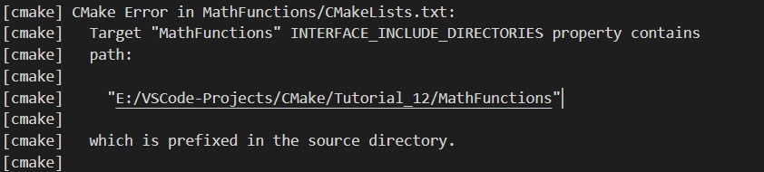

在安装和测试过程中，我们增加了 CMake 安装库文件和项目依赖的头文件(bin、lib、include)的能力。在打包可安装程序的过程中，我们增加了打包这些信息的能力，这样它就可以分发给其他人使用
接下来是如何添加必要的信息，以便其他 CMake 项目可以使用我们的项目，无论是在构建目录、本地安装还是打包的时候
第一步是更新我们的 install(TARGETS) 命令，不仅指定 DESTINATION，还指定 EXPORT。EXPORT 关键字生成一个 CMake 文件，其中包含从安装树导入安装命令中列出的所有目标的代码。
修改 MathFunctions/CMakeLists.txt 文件代码：
# install rules
set(installable_libs MathFunctions tutorial_compiler_flags)
if(TARGET SqrtLibrary)
list(APPEND installable_libs SqrtLibrary)
endif()
install(TARGETS ${installable_libs}
EXPORT MathFunctionsTargets
DESTINATION lib)
install(FILES MathFunctions.h DESTINATION include)
第二步我们还需要显式地安装生成的 MathFunctionsTargets.cmake 文件。在顶层的 CMakeLists.txt 文件底部添加如下代码：
install(EXPORT MathFunctionsTargets
FILE MathFunctionsTargets.cmake
DESTINATION lib/cmake/MathFunctions
)
此时构建会有下面的错误：

这是因为在生成导出信息期间，它将导出内在绑定到当前计算机项目的路径，在其他计算机上路径无效。
第三步更新 MathFunctions/CMakeLists.txt 中的 target_include_directories() 用来设置在 build 时和在 install/package 时需要使用不同的 INTERFACE locations。
# 将当前二进制目录添加到包含目录列表中
target_include_directories(MathFunctions
# INTERFACE ${CMAKE_CURRENT_SOURCE_DIR}
INTERFACE
$<BUILD_INTERFACE:${CMAKE_CURRENT_SOURCE_DIR}>
$<INSTALL_INTERFACE:include>
)
第四步我们还需要生成一个 MathFunctionsConfig.cmake，这样 CMake 的 find_package() 命令就可以找到我们的项目。在顶层的项目目录添加 Config.cmake.in 配置文件，内容如下：
@PACKAGE_INIT@
include ( "${CMAKE_CURRENT_LIST_DIR}/MathFunctionsTargets.cmake" )
为了正确地配置和安装该文件，将以下内容添加到顶层 CMakeLists.txt 文件的底部
include(CMakePackageConfigHelpers)
然后，执行 configure_package_config_file() 命令，此命令会将 Config.cmake.in 配置文件中的 @PACKAGE_INIT@ 变量替换为一个代码块，该代码块将设置的值转换为相对路径
include(CMakePackageConfigHelpers)
# generate the config file that is includes the exports
configure_package_config_file(${CMAKE_CURRENT_SOURCE_DIR}/Config.cmake.in
"${CMAKE_CURRENT_BINARY_DIR}/MathFunctionsConfig.cmake"
INSTALL_DESTINATION "lib/cmake/example"
NO_SET_AND_CHECK_MACRO
NO_CHECK_REQUIRED_COMPONENTS_MACRO
)
MathFunctionsConfig.cmake 文件内容：
####### Expanded from @PACKAGE_INIT@ by configure_package_config_file() #######
####### Any changes to this file will be overwritten by the next CMake run ####
####### The input file was Config.cmake.in ########
get_filename_component(PACKAGE_PREFIX_DIR "${CMAKE_CURRENT_LIST_DIR}/../../../" ABSOLUTE)
####################################################################################
include ( "${CMAKE_CURRENT_LIST_DIR}/MathFunctionsTargets.cmake" )
第五步生成 MathFunctionsConfigVersion.cmake 文件，该文件被 find_package 所使用，用于记录所需库安装包的版本和兼容性。通过添加 write_basic_package_version_file() 命令生成此文件
write_basic_package_version_file(
"${CMAKE_CURRENT_BINARY_DIR}/MathFunctionsConfigVersion.cmake"
# 版本
VERSION "${Tutorial_VERSION_MAJOR}.${Tutorial_VERSION_MINOR}"
# 指示此版本或任何更高版本与请求的版本兼容
COMPATIBILITY AnyNewerVersion
)
最后安装生成的配置文件：
install(FILES
${CMAKE_CURRENT_BINARY_DIR}/MathFunctionsConfig.cmake
${CMAKE_CURRENT_BINARY_DIR}/MathFunctionsConfigVersion.cmake
DESTINATION lib/cmake/MathFunctions
)
如果我们希望我们的项目也从构建目录中使用，我们只需要在顶层 CMakeLists.txt 的底部添加以下内容
export(EXPORT MathFunctionsTargets
FILE "${CMAKE_CURRENT_BINARY_DIR}/MathFunctionsTargets.cmake"
)
顶层 CMakeLists.txt 完整代码如下：
# 设置CMake版本最低要求
cmake_minimum_required(VERSION 3.15)
# 设置项目名称和版本
project(Tutorial VERSION 3.1)
# 指定 C++ 标准
# set(CMAKE_CXX_STANDARD 11)
# set(CMAKE_CXX_STANDARD_REQUIRED True)
add_library(tutorial_compiler_flags INTERFACE)
target_compile_features(tutorial_compiler_flags INTERFACE cxx_std_11)
# add compiler warning flags just when building this project via
# the BUILD_INTERFACE genex
set(gcc_like_cxx "$<COMPILE_LANG_AND_ID:CXX,ARMClang,AppleClang,Clang,GNU,LCC>")
set(msvc_cxx "$<COMPILE_LANG_AND_ID:CXX,MSVC>")
target_compile_options(tutorial_compiler_flags INTERFACE
"$<${gcc_like_cxx}:$<BUILD_INTERFACE:-Wall;-Wextra;-Wshadow;-Wformat=2;-Wunused>>"
"$<${msvc_cxx}:$<BUILD_INTERFACE:-W3>>"
)
# control where the static and shared libraries are built so that on windows
# we don't need to tinker with the path to run the executable
# 指定静态库和动态库的生成路径
set(CMAKE_ARCHIVE_OUTPUT_DIRECTORY "${PROJECT_BINARY_DIR}")
set(CMAKE_LIBRARY_OUTPUT_DIRECTORY "${PROJECT_BINARY_DIR}")
set(CMAKE_RUNTIME_OUTPUT_DIRECTORY "${PROJECT_BINARY_DIR}")
# 生成共享库选项
option(BUILD_SHARED_LIBS "Build using shared libraries" ON)
# 生成一个头文件，传递 CMake 的一些设置到源代码
configure_file(TutorialConfig.h.in TutorialConfig.h)
# 添加编译子模块 MathFunctions library
add_subdirectory(MathFunctions)
# 添加源码文件和生成的目标文件的名称
add_executable(Tutorial main.cpp)
# 依赖共享库 MathFunctions
target_link_libraries(Tutorial PUBLIC MathFunctions)
# 添加头文件查找路径
# target_include_directories(Tutorial PUBLIC
# "${PROJECT_BINARY_DIR}"
# "${PROJECT_SOURCE_DIR}/MathFunctions"
# )
target_include_directories(Tutorial PUBLIC
"${PROJECT_BINARY_DIR}"
)
# enable dashboard scripting
include(CTest)
# does the application run
add_test(NAME Runs COMMAND Tutorial 25)
# does the usage message work?
add_test(NAME Usage COMMAND Tutorial)
set_tests_properties(Usage
PROPERTIES PASS_REGULAR_EXPRESSION "Usage:.*number"
)
# define a function to simplify adding tests
function(do_test target arg result)
add_test(NAME Comp${arg} COMMAND ${target} ${arg})
set_tests_properties(Comp${arg}
PROPERTIES PASS_REGULAR_EXPRESSION ${result}
)
endfunction()
# do a bunch of result based tests
do_test(Tutorial 4 "4 is 2")
do_test(Tutorial 9 "9 is 3")
do_test(Tutorial 5 "5 is 2.236")
do_test(Tutorial 7 "7 is 2.645")
do_test(Tutorial 25 "25 is 5")
do_test(Tutorial -25 "-25 is (-nan|nan|0)")
do_test(Tutorial 0.0001 "0.0001 is 0.01")
## Packaging an Installer
# 此模块将打包项目当前平台所需的任何运行时库
include(InstallRequiredSystemLibraries)
set(CPACK_RESOURCE_FILE_LICENSE "${CMAKE_CURRENT_SOURCE_DIR}/License.txt")
set(CPACK_PACKAGE_VERSION_MAJOR "${Tutorial_VERSION_MAJOR}")
set(CPACK_PACKAGE_VERSION_MINOR "${Tutorial_VERSION_MINOR}")
set(CPACK_SOURCE_GENERATOR "TGZ")
include(CPack)
## 安装
install(TARGETS Tutorial DESTINATION bin)
install(FILES "${PROJECT_BINARY_DIR}/TutorialConfig.h"
DESTINATION include
)
install(EXPORT MathFunctionsTargets
FILE MathFunctionsTargets.cmake
DESTINATION lib/cmake/MathFunctions
)
include(CMakePackageConfigHelpers)
# generate the config file that is includes the exports
# 生成 cmake 配置文件
configure_package_config_file(${CMAKE_CURRENT_SOURCE_DIR}/Config.cmake.in
"${CMAKE_CURRENT_BINARY_DIR}/MathFunctionsConfig.cmake"
INSTALL_DESTINATION "lib/cmake/example"
NO_SET_AND_CHECK_MACRO
NO_CHECK_REQUIRED_COMPONENTS_MACRO
)
write_basic_package_version_file(
"${CMAKE_CURRENT_BINARY_DIR}/MathFunctionsConfigVersion.cmake"
# 版本
VERSION "${Tutorial_VERSION_MAJOR}.${Tutorial_VERSION_MINOR}"
# 指示此版本或任何更高版本与请求的版本兼容
COMPATIBILITY AnyNewerVersion
)
install(FILES
${CMAKE_CURRENT_BINARY_DIR}/MathFunctionsConfig.cmake
${CMAKE_CURRENT_BINARY_DIR}/MathFunctionsConfigVersion.cmake
DESTINATION lib/cmake/MathFunctions
)
# If we want our project to also be used from a build directory
export(EXPORT MathFunctionsTargets
FILE "${CMAKE_CURRENT_BINARY_DIR}/MathFunctionsTargets.cmake"
)
MathFunctions/CMakeLists.txt 完整代码：
# add the library that runs
add_library(MathFunctions MathFunctions.cxx)
# 生成导出库的宏定义文件
# include(GenerateExportHeader)
# generate_export_header(MathFunctions)
# 将当前二进制目录添加到包含目录列表中
target_include_directories(MathFunctions
# INTERFACE ${CMAKE_CURRENT_SOURCE_DIR}
INTERFACE
$<BUILD_INTERFACE:${CMAKE_CURRENT_SOURCE_DIR}>
$<INSTALL_INTERFACE:include>
)
# 通过 tutorial_compiler_flags 指定 MathFunctions 动态库的编译参数设置
target_link_libraries(MathFunctions PUBLIC tutorial_compiler_flags)
# should we use our own math functions
# 是否使用 USE_MYMATH 选项
option(USE_MYMATH "Use tutorial provided math implementation" ON)
if(USE_MYMATH)
# 设置程序中使用到的宏定义
target_compile_definitions(MathFunctions PRIVATE "USE_MYMATH")
# first we add the executable that generates the table
add_executable(MakeTable MakeTable.cxx)
# 通过 tutorial_compiler_flags 指定 MakeTable 可执行程序的编译参数设置
target_link_libraries(MakeTable PRIVATE tutorial_compiler_flags)
# add the command to generate the source code
add_custom_command(
OUTPUT ${CMAKE_CURRENT_BINARY_DIR}/Table.h
COMMAND MakeTable ${CMAKE_CURRENT_BINARY_DIR}/Table.h
DEPENDS MakeTable
)
# 添加静态库
# library that just does sqrt
add_library(SqrtLibrary STATIC
mysqrt.cxx
${CMAKE_CURRENT_BINARY_DIR}/Table.h
)
# state that we depend on our binary dir to find Table.h
target_include_directories(SqrtLibrary
PRIVATE ${CMAKE_CURRENT_BINARY_DIR}
)
# state that SqrtLibrary need PIC(position independent code) when the default is shared libraries
# 如果将一个没有位置独立代码(position independent code)的静态库与一个有位置独立代码的库组合在一起使用，
# 就要显示设置目标的属性，否则会有链接错误
set_target_properties(SqrtLibrary PROPERTIES
POSITION_INDEPENDENT_CODE ${BUILD_SHARED_LIBS}
)
# 通过 tutorial_compiler_flags 指定 SqrtLibrary 静态库的编译参数设置
target_link_libraries(SqrtLibrary PRIVATE tutorial_compiler_flags)
target_link_libraries(MathFunctions PRIVATE SqrtLibrary)
endif()
# define the symbol stating we are using the declspec(dllexport) when
# building on windows
# 声明dll导出宏定义
target_compile_definitions(MathFunctions PRIVATE "EXPORTING_MYMATH")
# install rules
set(installable_libs MathFunctions tutorial_compiler_flags)
if(TARGET SqrtLibrary)
list(APPEND installable_libs SqrtLibrary)
endif()
install(TARGETS ${installable_libs}
# generates a CMake file containing code to import all targets listed in the install command from the installation tree
EXPORT MathFunctionsTargets
DESTINATION lib)
install(FILES MathFunctions.h DESTINATION include)